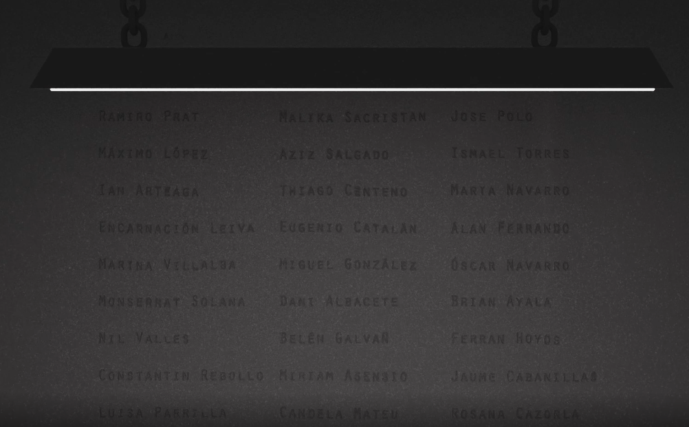

Hunting Loop
Hunting Loop cuenta la historia de como Marta tratando de buscar a su hermano desaparecido descubre que se ha visto sumergida en un bucle de huidas y asesinatos. Junto con Daniel y Belén tratan de descubrir cual es el misterio que hay detrás del juego, pero más importante tratan de conservar la vida.
Este corto lo realizamos en la asignatura de Producción y Edición Audiovisual 3º GIM, junto a otros compañeros de clase, en el curso 2020/2021.
Guión
Lo primero que tratamos de definir fue el guión. Hicimos una lluvia de ideas sobre la cual sacar el tema del corto. De todas las ideas elegimos la de Cazador y cazado / Juego. Un juego en el que va por rondas en el que ejerces uno de esos roles. El premio del juego es salir de este con vida.
Después de tener la idea general y un breve resumen de los acontecimientos describimos a los pjs. principales.
-
Marta (Protagonista)
- Objetivo: Descubrir que es de su hermano, averiguando más del creciente juego HuntingLoop.
- Estudiante universitario, es en la universidad donde conoce a otros jugadores
- Carácter: fin antes que medios, fiable, cambia a un carisma más duro conforme avanza el corto
-
Daniel
- Objetivo: Participar en el juego para obtener premio en metálico y costearse operaciones pendientes.
- Estudiante universitario, estudia junto con Belén.
- Carácter: introvertido, asustadizo, turbio. (Estándar chico buenas notas)
-
Belén
- Objetivo: Participar en el juego para obtener premio en metálico y poder gastárselo en el juego.
- Estudiante universitario, estudia junto con Daniel.
- Carácter: inerviosa, poca paciencia, irascible (Estándar chica malas notas)
Ya con los personajes definidos y la idea general. Desarrollamos el guión. Primero haciendo un Tratamiento, clase de resumen con comentarios adicionales sobre posibles caminos, atrezzo, etc. Con el tratamiento realizado podemos crear el guión, creamos a su vez el guión técnico con los planos o posibles planos a desarrollar.
Storyboard
Una vez tenemos ya tenemos los guiones nos centramos en el storyBoard. Este se dividirá en escenas. Primero dibujando los tipos de planos y pequeños mapas de las zonas de grabación y seguidamente la secuencia de planos
Grabación
Para la grabación del corto empleamos (en la medida que pudimos, "problemas covid") el material clase. Que incluía, cámara profesional de grabación varias baterias, micrófono de condensador... Aunque la mayoría de veces usamos de nuestros propios medios, cámara personal y micrófonos personales para la captación del audio.
Lugares
Nuestro corto se desarrolla en la cafetería de la ETSE, en "casa de Belén" y en "casa de Dani". Siendo estos dos últimos lugares las viviendas de los estudiantes. Durante toda la grabación del corto se mantuvieron las medidas COVID, que estaban vigentes en ese momento.
Blender, Premiere y After Effects
Hunting Loop, posee un pequeño grado de misticismo. Que hemos creado mediante Blender y After Effects. En este cada vez que un personaje sufre un trágico acontecimiento, aparecen previamente o después de este una serie de ojos que hemos agregado con VFX al vídeo real. (Comentaremos un poco más este apartado en las tareas de animación) También hay sombras, sonidos espeluznantes, y una misteriosa pared que marca quienes siguen jugando la partida y quiénes no...
Además de toda la introducción estar modelada y animada en Blender